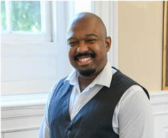
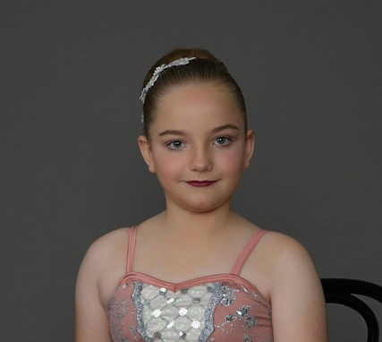
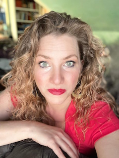
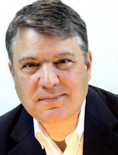
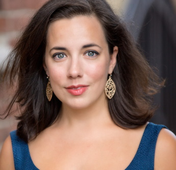
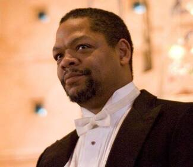

Amahl Cast and Crew

Brenton Mattox (Balthazar, Jan 5 and 14) bass is from
Jasper, Texas. He is a member of the Opera Philadelphia Corus, a
member of the Philadelphia Symphonic Choir, Philadelphia Chorus and
is a Marian Anderson Scholar for The Marian Anderson Historical
Society.In recent years he has been a staff singer at Church of the
Redeemer and a bass soloist for Church of Redeemer’s performances of
The Mozart Requiem and Mozart’s Coronation Mass in C, Rheinburger
Mass in G. He has been able to perform and cover many Symohonic
works such as the Bass Solo’s in Verdi’s Requiem, Faure’s Requiem,
Handel’s and Vivaldi’s Dixit Dominus, and Magnificat by Bach.In
2020, he sang Masetto in Opera on The Rocks’s Virtual Production of
Don Giovanni.In 2017, Mattox-Scott completed his second summer as a
young artist with Red River Lyric. He performed the roles of Melisso
(Alcina), and Father (Beauty and the Beast). In 2015, Brenton
performed Sarastro (Die Zauberflöte) with Red River Lyric. Mr.
Mattox-Scott received both his Bachelors and Masters from Stephen F.
Austin State University (SFA). During his time there, he was the
graduate assistant in voice and the bass section leader at the local
Presbyterian church. His performances included the bass soloist in
The Messiahand covered Elijah from Mendelssohn’s Elijah. Mattox also
performed the roles of Simone (Gianni Gianni),Kezal (Bartered
Bride), and Falstaff (The Merry Wives of Windsor).

Celia Anderson (Amahl cover) first toddled onto stage
at the end of the King of Prussia Players production of Ragtime, in
a cameo as Mother and Tateh's new daughter.She was then carried
about as the youngest Thenardier child when her mother directed Les
Miserblesin 2016.Last year she joined the inaugural mini competition
team at Rising Start Dance Academy in Limerick, where her group
earned high honors, including the personality or "sass" award, and
1stplace at True Talent.This year Celia will compete with the full
company in their Musical Theatre Production & Jazz entries, as well
as competing as a soloist in Tap.Technically Celia made her Operatic
debut a few months before birth, as extra support for her mother's
high E-flats, but she joined DVOC for the first time this past
summer, jumping into the chorus of Susannah -and becoming the
unofficial assistant to the props mistress -after only two
rehearsals. Celia lives at home with her Mother, Brother, Cats and
Chickens -and is pleased to be joining the cast of Amahl this
season.

Cole Nemer (Amahl) boy soprano is excited to join the
Delaware Valley Opera Company as the young boy Amahl. Cole fell in
love with opera while doing a walk-on role in DVOC’s production
Susannah(C. Floyd) during Summer 2023.He has enjoyed acting in
traditional Mummers’ plays with the Country Dance & Song
Societyduringsummers and has learned theatre improvisation fromYes!
And...Collaborative Arts(Philadelphia).In addition to studying voice
with Sandra Day, Cole is also an accomplished violinist who performs
solos and with Musicopia Young String Players
Orchestra(Philadelphia).After years of preparation, Cole received
hisJunior Black Belt in Kenpo karate in late-2022. Cole is a fourth
grade student at Roxborough ChristianSchool where he lovesreading
about history and mythology and participating in his school
music/dance program. Cole aspires to be on stage in any way he
can––and would like to pursue a career in opera.

Colin Markey (Kaspar) tenor has been described by
critics as having “a unique vocal range, spot-on sense of pitch,
powerful yet lyrical vocal qualities, and a well-developed
technique,”Mr. Markey's repertoire varies from early Baroque to
Wagner and beyond. Recently, he sang the title role in Tannhäuser
for Amici Opera Company in Philadelphia. Mr. Markey just completed a
successful run making his debut as Florestan in Beethoven's Fidelio
and Ralph Rackstraw in HmS Pinafore with Glow Lyric Theatre in
Greenville, South Carolina.Mr. Markey participated in the London Bel
Canto Festival studying with Bruce Ford and participated in master
classes with sopranos Nelly Miricioiu and Aprile Millo in 2018.

Collette Anderson (Mother cover) Lirico Spinto was
born and raised in King of Prussia, where she quite literally grew
up on the King of Prussia Players' stage (or more often than notin a
playpen tucked into the orchestra pit).She was active with many
local groups growing up -as a performer, choreographer, and
flautest.She received her Master's in Vocal Performance from
Westminster Choir College, and currently studies voice with Sharon
Sweet.Technically Collette made her operatic debut at the age of 8,
as both the Sandman (singing only) and the Dew Fairy in her 3rdGrade
class at Caley Elementary's production of Engelbert Humperdinck's
Hansel and Gretel.Her music teacher made her a casette tape
recording of the opera -and on the B side, she added a recording of
Amahl and the Night Visitors.More recently Collette has been seen as
the Soprano Soloist for Forrest's Requiem for the Living, and sang
the mezzo in the Angel's Trio at the National Cathedral in
Washington D.C. with the Wayne Oratorio Society.Favorite roles
include Mother in Ragtime, Iris in the World Premiere of Cleo, and
Nedda in Pagliacci with OperaLancaster and John Fowler, formerly of
the Metropolitan Opera, as Canio.She currently serves as the mezzo
soloist for the Memorial Church of the Good Shepherd in East Falls,
and a Soprano soloist/section lead at Congregation Beth Or in Maple
Glen.

Ed Meyers (Melchior) baritone, is delighted to be back
with DVOC performing Melchior in Amahl and the Night Visitors. In
prior seasons, Ed has performed in La Boheme, La Traviata, Merry
Widow and other productions. Ed has been seen in the past year
performing with both New Jersey Lyric Opera and Amici Opera. Ed
sings with Vox Amadeus and formerly with the Philadelphia Singers
Chorale. He is the baritone soloist at AllSaints Church, Wynnewood,
PA, and section leader at Congregation Keneseth Israel in Elkins
Park, PA. Most recently, Ed was a soloist for Vox Amadeus in
Vivaldi's Magnificat and in Bach's Christ lag in Todesbanden
cantata, and soloed in Messiah 2.0 at Saint Helena Catholic Church.

Emily Byrne (Mother) is an “impressive vocalist” with
a diverse range of performing credits to her name. A fan of
operetta, Ms. Byrne sang the role of Olga in Concert Operetta
Theater’s production of The Dollar Princess in 2017. Her favorite
professional credits include , Dorabella (Cosi Fan Tutte), ,Prince
Orlofsky (Die Fledermaus), Third Lady (The Magic Flute),Mercédès
(Carmen), Mrs. Nolan (The Medium),Pitti Sing (The Mikado), Mrs.
Gobineau (The Medium), and The Ocean (A Shipwrecked Opera).
Recently, Ms. Byrne was thrilled to make her Philadelphia Fringe
Festival debut as Raisa/Squirrel in Michael Dutka’s Liebovar.
Additionally, Ms. Byrne performed the role ofElvira with the Sofia
Philharmonic (Bulgaria) in their concert of Johann Strauss’
operetta,Blindekuh. This performance was also recorded for NAXOS and
is available on all streaming platforms.
Gail Cooper (Costumer) is a graduate of The University
of California Santa Barbara's theater arts program. She has worked
as a costume designer for over thirty years in support of community
theater and after retiring supports four Philadelphia companies by
designing and producing costumes of which DVOC is one. She would
like to thank Delaware Valley Opera Company for bringing opera to
our community and for inviting her to be a part of the magic.
.jpg)
Joe Krupa (Pianist) holds a Bachelor of Arts degree
from Rutgers University and a Masterof Musicdegree (Piano
Performance)from the Universityof Calgary (Alberta, Canada), plus
additional studies at the Banff Centre and Westminster Choir
College.Mr. Krupa is a much sought after collaborative pianist for
opera companies, choruses and music theatre companies in the
tri-state area, as well as for solo singers and
instrumentalists.Hehas ledconcerts and workshops dedicated to the
introduction of classical music and opera to high school and
elementary school students.Mr. Krupahas participated in workshops
and master classes in Europe, Canada, and the western U.S, studying
art song with Dalton Baldwin and Martin Katz. His principal teachers
have beenWillard Schultz, Steven Kemper and Alexander Fiorillo, a
former pupil of the legendary Vladimir Horowitz.A Cherry Hill,
NJresident, Joseph servesas Minister of Music at the First
Presbyterian Church in Salem, NJ, and teaches private piano students
throughout the South Jersey area.
Mark Roland (Melchior cover) Both onstage and
backstage, Mark has supported musical theater productionsfor more
than 50 years. Heis grateful to DVOC for providingopportunities to
contribute to the grandest form of musical theater.

Martin Hargrove (Balthazar Jan. 7) has performed on
stage with Minnesota Opera, Florida Grand Opera, Pennsylvania Opera
Theater, Center City Opera, Opera Delaware and the Braunschweig
Staatsoper. He has sung the roles of Ramfis in Aida, Colline in La
Boheme, Raimondo in Lucia di Lammermoor and Balthazar in Amahl and
the Night Visitors. Other roles include Figaro in Le Nozze di
Figaro, Sparafucile in Rigoletto, Angelotti in Tosca, Jake in Porgy
and Bess, Sarastro in Die Zauberflote, Il Commendatore in Don
Giovanni, and Colatinus in The Rape of Lucretia. His concert
repertoire includes Handel’s Messiah, Beethoven’s 9th Symphony,
Faure's Requiem, Haydn’s Lord Nelson Mass, Mozart’s Requiem, and
Alice Parker’s Sermon on the Mountain. He also sings with The
National Chorale and The American Spiritual Ensemble.

Robert James Davidson (Page) Robert James Davidson,
baritone, has sung leading roles with numerous professional
organizations including New York City Opera, Opera in the Slope
Brooklyn, ChristmanOpera Company NYC, Russian Opera Workshop at the
Academy of Vocal Arts, Opera Philadelphia, Ars Tempo Guatemala, and
the Sofia Philharmonic. At home in a broad range of styles, his
rich, flexible voice adds a golden-age touch to opera, operetta, and
musical theatre. Robert is a founding member of the Philadelphia
Opera Prep Club, a role study club for opera students and
professionals. He resides in South Philadelphia, USA with his
family, where he studies and teaches bel canto singing.